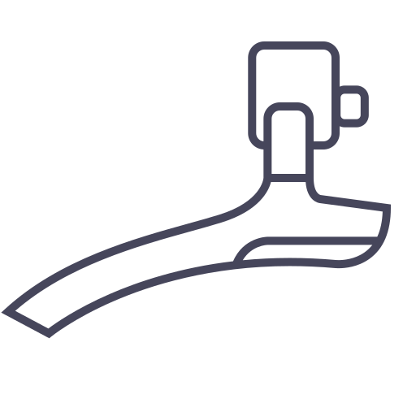
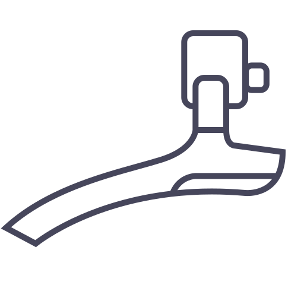

Anleitungen zur Reparatur

Antrieb
Angetrieben wird dein Fahrrad über das hintere Rad. Indem Du in die Pedale trittst, wird die Kraft
auf das Hinterrad übertragen und Du fährst vorwärts.
Die Kurbel und die Pedale sind am Tretlager aufgeschraubt. Das Tretlager ermöglicht dadurch die Übertragung deiner Muskelkraft auf das Rad.
Drehen sich die Ritzel, dreht sich das hintere Rad mit. Der Wirkungsgrad eines Fahrrad ist sehr gut.
Die Menge die Du an Energie eingibst, wird zum Großteil auf die Straße übertragen - natürlich am Besten, wenn dein Rad gut gepflegt ist.


Räder/Reifen

Deine Reifen sind auf den Laufrädern montiert. In den Reifen sitzt ein Schlauch. Der Schlauch wird mit Luft aufgepumpt, meißtens mit über 3 Bar, für eine angenehme Fahrt.
Oft steht auf den Reifen der empfohlene Luftdruck.
Es gibt 3 verschiedene Ventile zum Aufpumpen. Schrader, auch bekannt als Autoventil, außerdem Presta und Dunlop.
Nicht auf jedes Laufrad kann jeder beliebiger Reifen montiert werden. Es gibt folgende Regel: bis 1.5 Mal der Breite des Laufrads kann ein Reifen dick sein, um auf dieses Laufrad montiert zu werden.
Wenn der Reifen ausgewählt ist, muss noch der passende Schlauch gewählt werden. Auf der Schlauchverpackung steht für welche Reifenbreite dieser geeignet ist.
Es ist wichtig zu verstehen, dass Felge/Reifen/Schlauch auch im Durchmesser zueinander passen müssen. Die Standard-Fahrrad-Größe ist 28"(Zoll). 622mm ist bei dieser Größe der Innendurchmesser des Reifens,
und passt zum Außendurchmesser der einer 28" Laufrads. Hier hinein passt auch ein 28" Schlauch.

Schaltung
Die Schaltung eines Fahrrds wird gesteuert über einen Schalter am Lenker. Bei älteren Rädern kann der Betätigungshebel auch am Rahmen befestigt sein.
Im Schalter ist ein Bowdenzug befestigt, dieser hält das Schaltwerk in der gewünschten Position, sodass die Kette über eines der Ritzel geführt wird.
Das Schaltwerk welches die großen Kettenblätter steuert wird "Umwerfer" genannt. Das kleine Schaltwerk hinten heißt einfach "Schaltwerk".
Eine Schaltung muss richtig eingestellt sein. Ohne korrekt eingestellte Schaltung, kann es zu Problemen oder sogar Unfällen während der Fahrt kommen.
Ein großes Kettenblatt vorne führt zu einem hohen Gang und schwerem Treten. Ein kleines Ritzel hinten, auf dem die Kette läuft, führt ebenso zu einem großen Gang und schwerem Treten.
Die Schaltung ermöglicht es Dir Berge ebenso wie flache Straße mit einem angenehmen Fahrgefühl zu fahren.
 

Steuersatz

Der Steuersatz ermöglicht das Lenken mit dem Fahrrad. Hier gibt es viele verschiedene Ausführungen.
Der Lenker ist häufig an einem Vorbau befestigt. Dieser Vorbau steckt in der Gabel und die Gabel hält das vordere Rad in Position.
Der Vorbau kann in der Gabel klemmen, das passiert mit einer Befestigungsschraub die von oben eingeschraubt ein Keil in die Gabel treibt.
Es gibt zwei Stellen an denen Kugellager verbaut sind im Steuersatz:
1. Am Lenker-Rahmenrohr oben
2. Am Lenker-Rahmenrohr unten
Die gesamte Lenkereinheit muss beweglich sein. Du kannst den Lenker in einer Kurve bewegen und bewegst damit auch das Vorderrad um die Kurve.

Licht
Beleuchtung eines Fahrrads ist nach Einbruch der Dunkelheit vorgeschrieben. Ein Dynamo, Vorder - und Rücklicht müssen also verbaut werden.
Bei dem Anschließen der Lichter, ist auf die richtige Polarität zu achten.
Der Dynamo ist die Spannungsquelle und versorgt die Lichter mit Strom.
Du kannst die Leuchten zum Beispiel parallel schalten. Die Kabelenden müssen fest an den Kontakten sitzen.
Es gibt Nabendynamos, die direkt in der Nabe eines Rads verbaut sind, oder du nimmst einen klassischen Dynamo.
Es gibt auch batteriebetriebende Lichter, die an dein Rad geklemmt werden können.